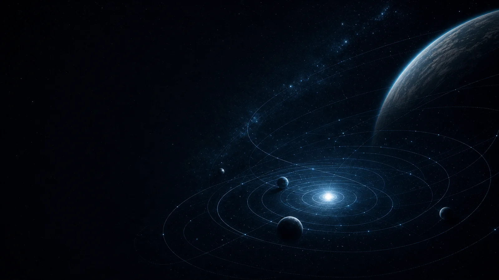

1945 · The mainframe era
Rooms became machines.
Early electronic computers filled entire rooms. ENIAC used thousands of vacuum tubes to calculate in seconds what once took people days.
From human time to machine time

A story shaped by computation
Scroll through the breakthroughs that moved computing from room-sized machines to an invisible layer of everyday life.
Five moments that changed everything
1945 · The mainframe era
Early electronic computers filled entire rooms. ENIAC used thousands of vacuum tubes to calculate in seconds what once took people days.
1947 · The transistor
The transistor replaced fragile vacuum tubes with a tiny, reliable switch. Computers could become smaller, faster, and far more efficient.
1971–1984 · Personal computing
Microprocessors placed a computer's core on a single chip. The graphical interface then turned abstract commands into windows, icons, and a pointer.
1989–2007 · The connected world
The web connected documents, people, and ideas. Mobile computing compressed that connected world into a screen we could carry everywhere.
Today · Intelligent systems
Computers no longer only execute instructions. They can recognize patterns, generate ideas, and collaborate through language—while people decide what comes next.
The palette uses deep space blue, aqua, mint, and warm amber highlights for contrast, avoiding generic defaults and delivering a consistent cosmic atmosphere.
Sticky scenes, continuous parallax, focus transitions, and chapter snapping turn the page into a guided visual story.
The structure collapses naturally from a multi-column desktop composition to a single-column mobile layout while preserving spacing, typography, and clarity.